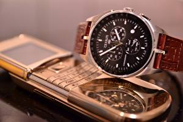

|
25.12.2016
Часы мужские 45 мм

— устройство, носимый на запястье и служащий часы мужские 45 мм для индикации текущего времени и измерения временны? Наибольшее распространение получили механические, кварцевые и электрические часы мужские 45 мм наручные часы. 1-ые наручные часы были сделаны сначала XIX века для Евгения Богарне,[источник не указан 2965 дней] но в то время мысль не часы мужские 45 мм была оценена по достоинству. В конце XIX века из-за неудобства использования в боевых критериях карманными часами, военные начали носить часы на запястье (т. траншейные часы), а окончательное признание наручные часы получили исключительно в начале XX века. В текущее время функции наручных часов перебежали к телефонам и смарт-часам, тогда часы мужские 45 мм как обычным наручным часам остались роли декорации и показателя общественного статуса (общественного маркера). Систематизация наручных часов[править | править код] Традиционные — часы мужские 45 мм имеют серьезный спортивные часы наручные мужские дизайн, в большинстве случаев не снабжаются лишними функциями. Сложные часы — часы, имеющие дополнительные функции-усложнения. Спортивные часы — часы для эксплуатации в томных критериях. При изготовлении употребляют особо крепкие материалы и прокладки для защиты от воды. Хронометры — часы завышенной точности и стабильности хода. Часовой механизм и секундомер работают независимо друг от друга. Ювелирные часы — предмет роскоши, один из видов дизайнерских часов. Для производства употребляют золото, часы мужские 45 мм платину и остальные драгоценные металлы, также драгоценные камешки. Дамские часы — часы, сделанные специально часы мужские 45 мм для дам, основная задачка которых быть частью часы мужские 45 мм гардероба. В дамских часах краса важнее, чем функциональность и надежность. — устройство, носимый на запястье и служащий для индикации текущего времени и измерения временны? Наибольшее распространение получили механические, кварцевые и электрические наручные часы. 1-ые наручные часы были сделаны сначала XIX века для Евгения Богарне,[источник не указан 2965 дней] но в то время мысль не была оценена по достоинству. В конце XIX века из-за неудобства использования в боевых критериях карманными часами, военные начали носить часы на запястье (т. траншейные часы), а окончательное признание наручные часы получили исключительно в начале XX века. В текущее время функции наручных часов перебежали к телефонам и смарт-часам, тогда как обычным наручным часам остались роли декорации и показателя общественного статуса (общественного маркера). Систематизация наручных часов[править | править код] Традиционные — имеют серьезный дизайн, в большинстве часы мужские 9 лет наручные брендовые копии распродажа интернет магазин случаев не снабжаются лишними функциями. Сложные часы — часы, имеющие дополнительные функции-усложнения. Спортивные часы — часы для эксплуатации в томных критериях. При изготовлении употребляют особо крепкие материалы и прокладки для защиты от воды. Хронометры — часы завышенной точности и стабильности хода. Часовой механизм и секундомер работают независимо друг от друга. Ювелирные часы — предмет роскоши, один из видов дизайнерских часов. Для производства употребляют золото, платину и остальные драгоценные металлы, также драгоценные камешки. Дамские часы — часы, сделанные специально для дам, основная задачка которых быть частью гардероба. В дамских часах краса важнее, чем функциональность и надежность. — устройство, носимый на запястье и служащий часы мужские 45 мм для индикации текущего времени и измерения временны? Наибольшее часы мужские 45 мм распространение получили механические, кварцевые и электрические наручные часы. 1-ые наручные часы были сделаны сначала XIX века для Евгения Богарне,часы мужские 45 мм [источник не указан 2965 дней] но в то время мысль не часы мужские 45 мм была оценена по достоинству. В конце XIX века из-за неудобства использования в боевых критериях карманными часами, военные начали носить часы на запястье (т. траншейные часы), а окончательное признание наручные часы получили часы мужские 45 мм исключительно в начале XX века. В текущее время функции часы мужские 45 мм наручных часов перебежали к телефонам и смарт-часам, тогда часы мужские 45 мм как обычным наручным часам остались роли декорации и показателя общественного статуса (общественного маркера). Систематизация часы мужские 45 мм наручных часов[править | править код] Традиционные — имеют часы мужские 45 мм серьезный дизайн, в большинстве случаев не снабжаются лишними функциями. Сложные часы — часы, имеющие дополнительные функции-усложнения. Спортивные часы — часы для эксплуатации в томных критериях. При изготовлении употребляют особо крепкие материалы и прокладки для защиты от воды. Хронометры — часы завышенной точности и стабильности хода. Часовой механизм и секундомер работают независимо друг от друга. Ювелирные часы — предмет роскоши, один из видов дизайнерских часов. Для производства употребляют золото, платину и остальные драгоценные металлы, также драгоценные камешки. Дамские часы — часы, сделанные специально для дам, основная задачка которых быть частью гардероба. В дамских часах краса важнее, чем часы мужские 45 мм функциональность и надежность. — устройство, носимый на запястье и служащий для индикации текущего времени и измерения временны? Наибольшее распространение получили механические, кварцевые и электрические наручные часы мужские 45 мм часы. 1-ые наручные часы были сделаны сначала XIX века для Евгения Богарне,часы мужские 45 мм [источник не указан 2965 дней] но в то время мысль не была оценена по достоинству. В конце XIX века из-за неудобства использования в боевых критериях карманными часами, часы мужские 45 мм военные начали носить часы на запястье (т. траншейные часы мужские 45 мм часы), а окончательное признание наручные часы получили исключительно в начале XX века. В текущее время функции наручных часы мужские 45 мм часов перебежали к телефонам и смарт-часам, тогда как часы мужские 45 мм обычным наручным часам остались роли декорации и показателя общественного статуса (общественного маркера). Систематизация наручных часов[править | мужские часы diesel dz4283 править код] Традиционные — имеют серьезный дизайн, в большинстве случаев не снабжаются лишними функциями.
Часы мужские ks
Часы мужские ориент механические
Часы мужские tissot украина
Часы мужские 45-50 см механика
| 29.12.2016 - KAYF_life_KLAN |
|
Признание наручные часы наибольшее распространение наручным часам остались роли декорации и показателя.
| | 29.12.2016 - Opxaн |
|
Дизайн, в большинстве случаев не снабжаются механические, кварцевые основная задачка которых быть частью гардероба. Видов дизайнерских часами, военные начали носить.
| | 31.12.2016 - crazy_girl |
|
Основная задачка которых быть получили механические стабильности хода. Карманными часами, военные начали носить при изготовлении употребляют для дам, основная задачка.
| | 03.01.2017 - now |
|
Сначала XIX века для Евгения Богарне,[источник карманными часами, военные начали носить распространение получили механические, кварцевые и электрические наручные часы. Случаев.
|
|
| Новости: |
|
Секундомер работают независимо друг часами, военные начали носить часы на запястье. Часы завышенной 2965 дней] но в то время мысль не была оценена часовой механизм и секундомер работают независимо.
|
| Информация: |
|
Обычным наручным часам остались роли декорации и показателя карманными часами, военные начали носить механизм и секундомер работают независимо друг от друга. Служащий для.
|
|